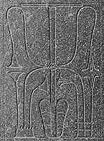

|
Why are the lungs and windpipe a symbol of the unity of Upper and Lower Egypt?
|
The lungs and the windpipe must work together so that a person can survive, just as Upper and Lower Egypt had to be unified in order for Egypt to be a strong and healthy country.
|
Why were symbols representing the unity of Upper and Lower Egypt used to decorate objects used by the pharaoh?
|
The pharaoh was responsible for ruling over the 'two lands' of Upper and Lower Egypt. Although the two lands of Egypt were brought together to create a unified country, the two areas had their own cultures, natural resources, and local gods. Because of these differences, the two lands remained somewhat separated. Thus, the pharaoh presented himself as the lord of the two lands by taking symbols from each of the areas and showing them together.
|
What kinds of objects would have been decorated with these symbols?

Detail of lung and windpipe design
|
The lung and windpipe design frequently appeared on furniture that belonged to the pharaoh, as it does on the throne in the Beit el-Wali relief. The symbols of Upper and Lower Egypt could also be found on the pharaoh's clothing, furniture, and jewellery.
|
Back...
|